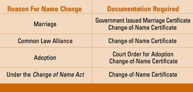

अपने ड्राइविंग लाइसेंस को सुरक्षित रखना
ओंटारियो में एक ही भाग का ड्राइविंग लाइसेंस होता है। इस लाइसेंस कार्ड पर ड्राइवर की फोटो और हस्ताक्षर होते हैं। ओंटारियो में सभी ड्राइवरों के पास एक ही भाग का ड्राइविंग लाइसेंस होना अनिवार्य है।
गाड़ी चलाते समय आपको अपना लाइसेंस हमेशा अपने साथ रखना होगा।
अपना लाइसेंस नवीनीकृत करना
आपको डाक द्वारा नवीनीकरण आवेदन पत्र प्राप्त होगा। इस पत्र को प्रांत में स्थित किसी भी सर्विस ओंटारियो केंद्र में ले जाएं। सभी केंद्रों में फोटो खींचने की सुविधा उपलब्ध है। आपको पत्र पर हस्ताक्षर करने, पहचान पत्र दिखाने, शुल्क का भुगतान करने और अपनी फोटो खिंचवाने के लिए कहा जाएगा। यदि आपका आवेदन और दस्तावेज सही पाए जाते हैं, तो आपको मौके पर ही अस्थायी लाइसेंस मिल जाएगा और आपका स्थायी लाइसेंस आपको डाक द्वारा भेज दिया जाएगा। वाहन चलाते समय इसे अपने साथ रखना अनिवार्य है और पुलिस अधिकारी के अनुरोध पर इसे दिखाना आवश्यक है।
यदि आपके लाइसेंस के नवीनीकरण की तिथि आने पर आपको डाक द्वारा नवीनीकरण आवेदन पत्र प्राप्त नहीं होता है, तो परिवहन मंत्रालय से संपर्क करें। वैध ड्राइविंग लाइसेंस होना आपकी ज़िम्मेदारी है। आप बिना किसी परीक्षा के एक वर्ष के भीतर समाप्त हो चुके कार या मोटरसाइकिल ड्राइविंग लाइसेंस का नवीनीकरण करा सकते हैं।
यदि आपका लाइसेंस तीन साल से अधिक समय से निलंबित, रद्द या समाप्त हो गया है, तो आपको ओंटारियो में लाइसेंस के लिए फिर से आवेदन करना होगा और क्रमिक लाइसेंसिंग की सभी आवश्यकताओं को पूरा करना होगा, जिसमें सभी आवश्यक परीक्षाओं को उत्तीर्ण करना शामिल है।
80 वर्ष या उससे अधिक आयु के वरिष्ठ चालक
लाइसेंसिंग
यदि आपकी आयु 80 वर्ष या उससे अधिक है, तो आपको हर दो वर्ष में अपना ड्राइविंग लाइसेंस नवीनीकृत कराना अनिवार्य है। यह नवीनीकरण प्रक्रिया वरिष्ठ नागरिकों को लंबे समय तक गतिशील और स्वतंत्र रहने में मदद करती है, साथ ही असुरक्षित चालकों की पहचान करने और उनके खिलाफ उचित कार्रवाई सुनिश्चित करने में भी सहायक होती है।
आपका लाइसेंस समाप्त होने से पहले, आपको डाक द्वारा ड्राइवर लाइसेंस नवीनीकरण आवेदन पत्र और एक पत्र प्राप्त होगा जिसमें आपको आवश्यक चरणों के बारे में बताया जाएगा।
सबसे पहले, आपको यह करना चाहिए:
- वरिष्ठ चालकों के लिए शिक्षा का वीडियो देखें
- परिवहन मंत्रालय की आधिकारिक चालक पुस्तिका के शेष भाग की समीक्षा करें।
- अधिक जानकारी के लिए Ontario.ca/seniordriver पर जाएं।
आपका अगला कदम सर्विसओंटारियो केंद्र में अपॉइंटमेंट बुक करना है, जो आप इस प्रकार कर सकते हैं:
- ऑनलाइन: सर्विसओंटारियो अपॉइंटमेंट बुक करें
- 1-800-396-4233 पर टोल-फ्री नंबर पर कॉल करके
- ग्रेटर टोरंटो क्षेत्र में 416-235-3579 पर कॉल करके
अपॉइंटमेंट के दौरान आपको एक विजन टेस्ट और पांच मिनट का स्क्रीनिंग एक्सरसाइज पूरा करना होगा।
सत्र के बाद, यदि आप सभी आवश्यकताओं को सफलतापूर्वक पूरा कर लेते हैं, तो आप अपना लाइसेंस नवीनीकृत कर सकेंगे।
हालांकि, लाइसेंस का नवीनीकरण कराने से पहले आपको सड़क परीक्षा उत्तीर्ण करनी पड़ सकती है, अपने डॉक्टर से परामर्श लेना पड़ सकता है और चिकित्सा संबंधी जानकारी जमा करनी पड़ सकती है या किसी डॉक्टर या नेत्र विशेषज्ञ से दृष्टि संबंधी अतिरिक्त जानकारी प्राप्त करनी पड़ सकती है। यदि अतिरिक्त चिकित्सा जानकारी की आवश्यकता होगी, तो आपको डाक द्वारा सूचित किया जाएगा।
लाइसेंस नवीनीकरण संबंधी किसी भी आवश्यकता के लिए कोई शुल्क नहीं है। आपको केवल लाइसेंस नवीनीकरण शुल्क का भुगतान करना होगा।
वरिष्ठ चालकों से संबंधित अधिक जानकारी Ontario.ca/seniordriver पर मिल सकती है। आप यह भी कर सकते हैं:
- 1-800-396-4233 पर टोल-फ्री नंबर पर कॉल करें
- ग्रेटर टोरंटो क्षेत्र में 416-235-3579 पर कॉल करें
बढ़ती उम्र ड्राइविंग सुरक्षा को कैसे प्रभावित करती है
- दृष्टि कमजोर हो जाना - विशेषकर रात में
- दूरी और गति का अनुमान लगाने में कठिनाई
- सीमित गतिशीलता और गति की सीमा
- धीमी प्रतिक्रिया समय
- लंबे समय तक ध्यान केंद्रित करने में कठिनाई
- आसानी से विचलित होना
- जो कुछ आप देखते और सुनते हैं उसे समझने के लिए और समय चाहिए।
- डॉक्टर के पर्चे पर मिलने वाली और/या बिना पर्चे के मिलने वाली दवाओं का अधिक सेवन, जो आपकी ड्राइविंग क्षमता को प्रभावित कर सकता है।
आप अपनी ड्राइविंग को सुरक्षित बनाने के लिए क्या कर सकते हैं
आपकी सेहत गाड़ी चलाने की क्षमता में अहम भूमिका निभाती है। सुरक्षित ड्राइविंग की ज़रूरतों को पूरा करने में आपकी मदद के लिए:
- अपने डॉक्टर या फार्मासिस्ट से यह सुनिश्चित कर लें कि आपकी वर्तमान और नई दवाएं आपकी ड्राइविंग क्षमता पर नकारात्मक प्रभाव न डालें। बिना प्रिस्क्रिप्शन के मिलने वाली दवाएं और दवाओं के संयोजन भी आपकी ड्राइविंग क्षमता को प्रभावित कर सकते हैं।
- अपने डॉक्टर को सूचित करें:
- दृष्टि में परिवर्तन, बिना किसी स्पष्ट कारण के चक्कर आना या बेहोशी के दौरे पड़ना;
- बार-बार होने वाला, दीर्घकालिक या गंभीर दर्द।
- दर्द होने पर गाड़ी चलाने से बचें। इससे आपकी एकाग्रता कम हो सकती है और गाड़ी चलाते समय आपकी गतिविधि सीमित हो सकती है।
- अपनी सुनने और देखने की क्षमता की नियमित रूप से जांच करवाते रहें। परिधीय दृष्टि और गहराई को समझने की क्षमता उम्र के साथ कम होने लगती है।
- आपका डॉक्टर लचीलापन बढ़ाने और ताकत बनाए रखने के लिए एक व्यायाम कार्यक्रम की सिफारिश कर सकता है, जिससे सुरक्षित रूप से गाड़ी चलाने की आपकी क्षमता में मदद मिल सकती है।
- सड़क के नियमों और सुरक्षित ड्राइविंग प्रथाओं के बारे में अपने ज्ञान को ताज़ा करने के लिए ड्राइवर कोर्स करने पर विचार करें।
खुद से पूछें: मेरी ड्राइविंग कैसी है?
इस टेस्ट को लें और खुद से ये सवाल पूछें:
- क्या मेरे साथ होने वाली दुर्घटनाओं की संख्या लगातार बढ़ रही है?
- क्या मैं मामूली दुर्घटनाओं में प्रत्यक्ष रूप से शामिल रहा हूँ?
- क्या मुझे चौराहों से गुजरते समय गाड़ी चलाने, दूरी का अनुमान लगाने या पैदल यात्रियों, सड़क संकेतों या अन्य वाहनों को देखने में कठिनाई होती है?
- क्या मुझे गाड़ी चलाते समय ध्यान केंद्रित करने में कठिनाई होती है?
- क्या मैं जानी-पहचानी सड़कों पर भी रास्ता भटक जाता हूँ या भ्रमित हो जाता हूँ?
- क्या मुझे हाथ और पैर की गतिविधियों में तालमेल बिठाने में कठिनाई होती है?
- क्या मुझे दृष्टि संबंधी समस्याएं हो रही हैं, खासकर रात में?
- क्या मुझे गाड़ी चलाते समय घबराहट होती है?
- क्या दूसरे वाहन चालक अक्सर मुझे हॉर्न बजाकर परेशान करते हैं?
- क्या परिवार के सदस्य मेरी ड्राइविंग क्षमता के बारे में चिंता व्यक्त करते हैं?
- मेरे लिए गाड़ी चलाना कितना महत्वपूर्ण है?
इन सवालों के जवाब आपको यह तय करने में मदद कर सकते हैं कि क्या आपको गाड़ी चलाना जारी रखना चाहिए, दिन के समय जैसे कुछ निश्चित समयों पर ही गाड़ी चलानी चाहिए या गाड़ी चलाना पूरी तरह बंद कर देना चाहिए। यदि आपने एक या अधिक चेतावनी संकेतों की जाँच की है और अपनी ड्राइविंग क्षमता के बारे में चिंतित हैं, तो अपने डॉक्टर या परिवार से बात करें और उनकी राय लें।
समूह शिक्षा सत्र में, आप वरिष्ठ चालकों की सुरक्षा से संबंधित इन विषयों के बारे में अधिक जानेंगे।
स्नातक लाइसेंसिंग पुनःयोग्यता
ग्रेजुएटेड लाइसेंसिंग के तहत, नए ड्राइवर (क्लास G1, G2, M1 और M2) दो चरणों वाली लाइसेंसिंग प्रक्रिया से गुजरते हैं। इसके लिए उन्हें प्रत्येक स्तर के लिए निर्धारित समय अवधि पूरी करनी होती है और आवश्यक रोड टेस्ट पास करने होते हैं। क्लास M1 को छोड़कर, नए ड्राइवरों के पास ग्रेजुएटेड लाइसेंसिंग प्रक्रिया पूरी करने के लिए पांच साल का समय होता है। हालांकि, यदि आपका क्लास G1, G2 या M2 लाइसेंस समाप्त होने वाला है और आपने प्रक्रिया पूरी नहीं की है, तो आप एक टेस्ट पास करके और पांच साल का लाइसेंसिंग शुल्क अदा करके उसी क्लास का लाइसेंस दोबारा प्राप्त कर सकते हैं या बरकरार रख सकते हैं। इसे "रीक्वालिफिकेशन" कहा जाता है। क्लास G1, G2 और M2 के ड्राइवरों को उनके लाइसेंस की समाप्ति तिथि से पहले एक नोटिस भेजा जाता है जिसमें उन्हें उनके विकल्पों के बारे में सूचित किया जाता है। यदि आप अपने G1, G2 या M2 लाइसेंस की समाप्ति से पहले ग्रेजुएटेड लाइसेंसिंग प्रक्रिया पूरी नहीं करते हैं या रीक्वालिफाई नहीं करते हैं, तो आपके पास ड्राइविंग लाइसेंस नहीं होगा और आपको लेवल वन लाइसेंस के लिए दोबारा आवेदन करना होगा।
अपना नाम या पता बदलना
नाम या पता बदलने के छह दिनों के भीतर आपको परिवहन मंत्रालय को सूचित करना होगा।
पता बदलने पर आपको नए लाइसेंस की आवश्यकता होगी। आप ServiceOntario की वेबसाइट पर अपना पता बदल सकते हैं या आप ड्राइवर और वाहन लाइसेंस जारी करने वाले कार्यालय में जाकर जानकारी बदल सकते हैं, या इसे परिवहन मंत्रालय, पीओ बॉक्स 9200, किंग्स्टन, ओंटारियो , K7L 5K4 को डाक से भेज सकते हैं। मंत्रालय आपको नया लाइसेंस भेजेगा। नया लाइसेंस मिलने पर, अपने पुराने लाइसेंस को नष्ट कर दें और गाड़ी चलाते समय नया लाइसेंस अपने साथ रखें।
नाम बदलने पर आपको नया लाइसेंस बनवाना होगा। आवश्यक दस्तावेज़ (इस पृष्ठ पर दिए गए चार्ट को देखें) और अपना वर्तमान लाइसेंस लेकर ड्राइवर एवं वाहन लाइसेंस जारी करने वाले कार्यालय जाएँ। वहाँ आपकी एक नई तस्वीर ली जाएगी। आपको एक अस्थायी लाइसेंस मिलेगा जिसका उपयोग आप अपना स्थायी लाइसेंस डाक द्वारा प्राप्त होने तक कर सकते हैं। गाड़ी चलाते समय इसे हमेशा अपने साथ रखें।
नाम या पता बदलने पर नया लाइसेंस बनवाने के लिए कोई शुल्क नहीं लगता है।
इस पेज पर दिए गए चार्ट में वे दस्तावेज़ दिखाए गए हैं जिनकी आपको अपने ड्राइविंग लाइसेंस पर नाम बदलने के लिए आवश्यकता होगी।

ड्राइवर लाइसेंस संबंधी कानून
निम्नलिखित कार्य करना गैरकानूनी है:
- अपना लाइसेंस उधार दें
- इसे किसी और को इस्तेमाल करने दें
- परिवर्तित लाइसेंस का उपयोग करें
- किसी अन्य लाइसेंस का उपयोग अपने लाइसेंस के रूप में करें
- आपके पास एक से अधिक ओंटारियो ड्राइवर लाइसेंस हैं
- किसी काल्पनिक या नकली लाइसेंस का उपयोग करें
अवगुण अंक प्रणाली
डिमेरिट-पॉइंट प्रणाली चालकों को अपने व्यवहार में सुधार करने के लिए प्रोत्साहित करती है और लोगों को उन चालकों से बचाती है जो ड्राइविंग के विशेषाधिकार का दुरुपयोग करते हैं। ड्राइविंग संबंधी अपराधों में दोषी पाए गए चालकों के रिकॉर्ड में डिमेरिट पॉइंट दर्ज किए जाते हैं। डिमेरिट पॉइंट अपराध की तारीख से दो साल तक आपके रिकॉर्ड में रहते हैं। यदि आपके बहुत अधिक डिमेरिट पॉइंट जमा हो जाते हैं, तो आपका ड्राइविंग लाइसेंस निलंबित किया जा सकता है।
नए ड्राइवर - लेवल वन और लेवल टू ड्राइवरों के लिए डिमेरिट-पॉइंट सिस्टम
दो या अधिक अंक
आपको एक चेतावनी पत्र प्राप्त होगा।
छह अंक
आपको एक दूसरा चेतावनी पत्र मिलेगा जिसमें आपको अपने ड्राइविंग व्यवहार में सुधार करने के लिए प्रोत्साहित किया जाएगा।
नौ या अधिक अंक
परिवहन मंत्रालय को अपना लाइसेंस सौंपने की तारीख से आपका लाइसेंस 60 दिनों के लिए निलंबित कर दिया जाएगा। लाइसेंस न सौंपने पर आपका लाइसेंस दो साल तक के लिए रद्द हो सकता है। निलंबन के बाद, आपके रिकॉर्ड में अंकों की संख्या घटकर चार हो जाएगी। अतिरिक्त अंक मिलने पर आपको फिर से साक्षात्कार के लिए बुलाया जा सकता है। यदि आपके अंक फिर से नौ हो जाते हैं, तो आपका लाइसेंस छह महीने के लिए निलंबित किया जा सकता है।
लेवल वन या लेवल टू ड्राइवर के रूप में, यदि आप दो साल की अवधि के दौरान नौ या अधिक डिमेरिट पॉइंट जमा करते हैं तो आपका लाइसेंस निलंबित कर दिया जाएगा।
ध्यान दें: यदि आप नौसिखिया ड्राइवर हैं और नौसिखिया होने की किसी भी शर्त का उल्लंघन करने, चार या अधिक डिमेरिट पॉइंट्स से संबंधित किसी अपराध के लिए दोषी पाए जाते हैं, या ऐसे अपराध के लिए अदालत द्वारा निलंबित किए जाते हैं जिसके परिणामस्वरूप चार या अधिक डिमेरिट पॉइंट्स मिलते, तो आपको उचित दंड और नौसिखिया ड्राइवर लाइसेंस निलंबन का सामना करना पड़ेगा। हालांकि, आपके रिकॉर्ड में डिमेरिट पॉइंट्स शून्य के रूप में दर्ज किए जाएंगे और संचित डिमेरिट पॉइंट सिस्टम में नहीं गिने जाएंगे।
पूर्ण लाइसेंस प्राप्त चालकों के लिए अवमूल्यन अंक प्रणाली
छह अंक
आपको एक चेतावनी पत्र प्राप्त होगा जिसमें आपको अपने ड्राइविंग कौशल में सुधार करने की सलाह दी जाएगी।
नौ अंक
आपको एक दूसरा चेतावनी पत्र मिलेगा जिसमें आपको अपने ड्राइविंग व्यवहार में सुधार करने के लिए प्रोत्साहित किया जाएगा।
15 अंक
परिवहन मंत्रालय को अपना लाइसेंस सौंपने की तारीख से आपका लाइसेंस 30 दिनों के लिए निलंबित कर दिया जाएगा। यदि आप इसे वापस नहीं सौंपते हैं, तो आपका लाइसेंस दो साल तक के लिए रद्द हो सकता है। निलंबन के बाद, आपके ड्राइविंग रिकॉर्ड में अंकों की संख्या घटाकर सात कर दी जाएगी। अतिरिक्त अंक मिलने पर आपको फिर से साक्षात्कार के लिए बुलाया जा सकता है। यदि आपके अंक फिर से 15 हो जाते हैं, तो आपका लाइसेंस छह महीने के लिए निलंबित कर दिया जाएगा।
अपराधों की तालिका
यहां वाहन संबंधी अपराधों के लिए मिलने वाले दंड अंक दिए गए हैं।
सात अंक
- दुर्घटनास्थल पर न रुकना
- पुलिस के लिए न रुकना
छह अंक
- लापरवाही से गाड़ी चलाना
- दौड़
- जिन सड़कों पर गति सीमा 80 किमी/घंटा से कम है, उन पर गति सीमा से 40 किमी/घंटा या उससे अधिक की गति से वाहन चलाना।
- गति सीमा से 50 किमी/घंटा या उससे अधिक की गति से वाहन चलाना
- स्कूल बस के लिए न रुकना
पांच अंक
- असुरक्षित रेलवे क्रॉसिंग पर बस चालक के न रुकने से दुर्घटना हो गई।
चार अंक
- गति सीमा से 30 से 49 किमी/घंटे अधिक गति से वाहन चलाना
- बहुत करीब से पीछा करना
- पैदल यात्री क्रॉसिंग पर न रुकना
तीन अंक
- गति सीमा से 16 से 29 किमी/घंटे अधिक गति से वाहन चलाना
- रेलवे क्रॉसिंग बैरियर के ऊपर से, उसके चारों ओर से या उसके नीचे से गाड़ी चलाना
- ड्राइविंग करते समय हाथ में वायरलेस संचार/मनोरंजन उपकरण पकड़े रहना या उसका उपयोग करना, या ड्राइविंग कार्य से असंबंधित डिस्प्ले स्क्रीन देखना।
- रास्ता न देना
- स्टॉप साइन, ट्रैफिक लाइट या रेलवे क्रॉसिंग सिग्नल का पालन न करना
- यातायात नियंत्रण के स्टॉप साइन का पालन न करना
- यातायात नियंत्रण के धीमे चलने के संकेत का पालन न करना
- स्कूल क्रॉसिंग पर रुकने के संकेत का पालन न करना
- पुलिस अधिकारी के निर्देशों का पालन न करना
- विभाजित सड़क पर गलत दिशा में गाड़ी चलाना
- किसी दुर्घटना की सूचना पुलिस अधिकारी को न देना
- जहां सड़क लेन में बंटी हो, वहां गलत तरीके से गाड़ी चलाना
- ड्राइवर की सीट पर भीड़ जमा हो गई है
- एकतरफा सड़क पर गलत दिशा में जाना
- बंद सड़क पर वाहन चलाना या उसका संचालन करना
- विभाजित सड़क को पार करना जहाँ उचित क्रॉसिंग की व्यवस्था नहीं है
- रुके हुए आपातकालीन वाहन को धीमा किए बिना और सावधानीपूर्वक पार करने में विफल रहना
- रुके हुए आपातकालीन वाहन को पार करते समय, संभव होने पर, दूसरी लेन में न जाना।
- रडार डिटेक्टर से लैस वाहन चलाना
- उच्च यात्री क्षमता वाले वाहन (एचओवी) लेन का अनुचित उपयोग
- वाहन का दरवाजा गलत तरीके से खोलना
दो अंक
- हेडलाइट की बीम को नीचे करने में विफलता
- निषिद्ध मोड़
- लोगों को खींचकर ले जाना - उदाहरण के लिए स्लेज, साइकिल, स्की आदि पर।
- संकेतों का पालन न करना
- सड़क साझा करने में विफल
- गलत दाएँ मोड़
- गलत बाएँ मोड़
- संकेत देने में विफल
- अनावश्यक रूप से धीमी गति से गाड़ी चलाना
- राजमार्ग पर रिवर्स करना
- ड्राइवर ने सीटबेल्ट नहीं पहनी थी।
- ड्राइवर शिशु यात्री की सुरक्षा सुनिश्चित करने में विफल रहा।
- चालक द्वारा शिशु यात्री की सुरक्षा सुनिश्चित करने में विफलता
- चालक बच्चे की सुरक्षा सुनिश्चित करने में विफल रहा।
- चालक द्वारा 16 वर्ष से कम आयु के यात्री के सीटबेल्ट पहनने की पुष्टि न करना।
- चालक द्वारा यह सुनिश्चित न करना कि 16 वर्ष से कम आयु का यात्री सीट बेल्ट वाली सीट पर बैठा हो।